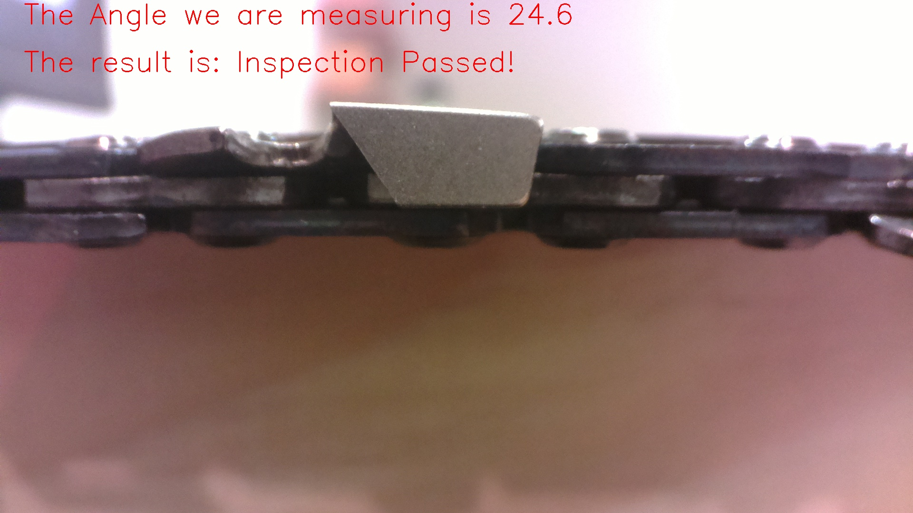
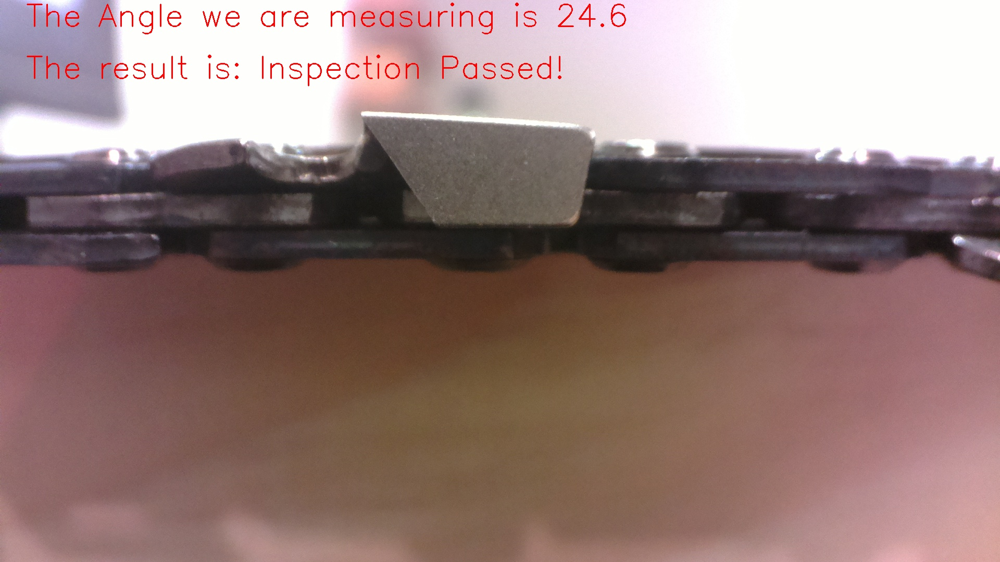

Boston University
CS585 Image and Video Computing
Project Final Report
Chainsaw Inspection Device
by
ChaInspection Team
Team Members:
Wei-Chu Lee alicewc@bu.edu
Yifei Huang yifeih@bu.edu
Chengyang He henryhcy@bu.edu
Chainsaws are dangerous and complex tools with equally complex maintenance requirements. One of the chainsaw’s key components, the chain, requires meticulous and precise filing in order to effectively, and, most importantly, safely cut away material. Our team’s goal is to develop a tool to inspect, rate, and record the rating of each cutting link in the chain, as well as give the overall chain a pass/fail rating.
According to the Centers for Disease Control and Prevention, each year, approximately 36,000 patients are treated for chainsaw injuries. Injuries caused directly by the chainsaw very frequently stem from improper chain maintenance. Cutting with a dull, or damaged blade can lead to a range of potentially serious hazards, such as: kickback, chain slippage due to excessive vibration, or lead to the chainsaw itself slipping off the object being cut. While chain manufacturers provide parameters and guides on how to sharpen and file a chain, there is no way of knowing whether the operator did a good job or not until the saw is used to cut. Moreover, if the chain needs servicing, there is no way to know which links require how much sharpening and filing.
Therefore, a formal inspection system is required to properly address all these issues. Our chainsaw inspection tool is designed to give a way out to all these hidden problems, giving woodworkers a safer environment to work in.
Problem Statement and Goals
Our project aims at giving woodworkers a formal inspection system to inspect the cutting links using the parameters given by the manufacturers. To cut the wood efficiently and safely, the cutter should be sharpened to the specific angle and height. A dull chain produces sawdust that gets sucked into the air filter, reducing power by limiting the airflow to the power head. It also does not allow the saw to cut smoothly and puts unnecessary strain on the power head and increases the risk of kickback.
To avoid operating the saw with a dull cutter link, every link should be inspected meticulously. Therefore, our tool will be able to inspect most of the chains in the market and give an overall pass/fail rating. Common failures include
First, when the cutters are not sharpened, the angle of depth gauge is incorrect, which may be caused by the improper filing; thus, the chain may not work efficiently. Second, when gauge depth is not set correctly, it may interrupt the system and the saw cannot cut the wood smoothly. Last, the burn mark on the chainsaw caused by extra heat generated when the chainsaw is operated with a dull cutter will also cause problems.
To avoid all these failures, our device will need a video display of the inspection process. The video may have to display the link in the system, which shows the angle of the cutter, the height between the cutting corner and the gullet and the burn mark. Other than the video display, the device must detect the exact angle of the cutters and the exact height difference between the cutting corner and the gullet on the specific part of the link on the chain; thus, the user is able to know which specific part of the chain needs to be filed.
The advanced function of the system will be to provide a way to sharpen the chain after the inspection device finds out the failures. Instead of using the depth gauge tool to adjust the height, our project will have to build up a device to cut a specific angle for the cutter link.
Methods
Hardware
For the prototype, we have the chainsaw bar screwed to a piece of pine wood horizontally, which also has the motor and camera mount screwed to it, all mounted on a wooden base. The camera we’ve chosen is a Raspberry Pi Macro 3.6mm camera connected to a raspberry pi 3 B+ processor. The focus on the lens has been manually adjusted into macro range. The Raspberry Pi, running a Raspbian desktop environment, is connected to an HDMI monitor with a keyboard and mouse for both controlling the testing program and debugging. The following Diagram is the setup of our device.
Overall Mechanism:
For the computer vision part of our project, our goal is to find the angle between the blade edge and the line perpendicular to the driving link. In order to do that, we need to find all the set of points with coordinates of those edges on each blade of the link. After we stored all the points of each edge in a data set, we can use linear regression to get the optimized slope of each edge. With the slopes we gathered from each blade, the measuring angle can be calculated. The optimal threshold for our project is that the angle we are trying to get should be 25 degree to satisfy the shapenness standard.
Template Matching for Region of Interest:
This two pictures above are the template we are using in the template matching to locate our blade into smaller area so that we can neglect those unnecessary pixels in the image. Because the blades are switching left and right on the link and therefore the edges location on the image needs to be different based on whether the the image is taken on the left or right side of blade, we apply two kinds of template to different direction of the blade. For template matching method, we implement with opencv default function cv2.matchTemplate() & cv2.minMaxLoc(), and used TM_SQDIFF_NORMED for matching.
Adaptive Thresholding and Morphology:
After process the images with template matching and hence obtain the region of interest, we apply adaptive thresholding with Gaussian window, trying different combinations of block_size and offset, and finally adopt block size = 15, offset = 13. Then we use Morphology to eliminate disturbance in the background of the image.
Opening(Morphology)
Contour and Canny Edge:
We utilize the default function of cv2.findContour to get the contour of blades. Though the contours are not perfect, having the image with the contour of edge of the blade storing into a list as points by applying Canny Edge Algorithm, we can calculate the slope of the edges by applying linear regression and thus get the results. As a way to find all the points on the edge, we set several if-else statement to refine the scope and get the representative points for calculating slope.
Experiment
Since the blades on the chain are intersecting each other with blade pointing different direction, we randomly select two chain links one pointing up and one pointing down. The left one is randomly select in a set of worn chain and the right one is select in a new chain.
Original Picture Taken by the Camera for one worn link and one brand new link
The cropped image after applying template matching on the original picture
The image obtained after applying Adaptive Thresholding with block size = 15, offset = 13. The result still has some interference on the side of the edge.
The image obtained after applying Morphology(erosion and dilation) to eliminate those interference on the side of the edge
Results of image after drawing contour on edge of the blade.
The Inspection Result of our original images after image computation.
Result
While the per-link error is small, it did lead to strange CV analysis inconsistencies later in the inspection cycle, when the overall positioning error had added up into full millimeters. Examples of these anomalies would be brand new links given a “fail” rating due to skewed slope measurements, or skewed slope measurements overall. Utilizing the template matching can let the computer automatically locate the region of interest in our original image hence more meaningless calculation can be avoided.
In terms of the CV section, our project didn’t finally reach the specific degree standard (with an off by 4 degrees for the perfect chain) because of the contouring of our edge is still not perfect and varied along with the lighting condition. Since there exists an changing light condition in the testing environment, we were unable to convert the images perfectly by merely using fixed value of block size and offset of adaptive thresholding, numbers of dilation and erosion. We try to use Gaussian average to convert the image but the contour left with several blobs that coordinates are hard to capture.
The following pictures exemplify one of our flaws during the inspection:
As we can see in the image, the results after adaptive thresholding and morphological transform is not as satisfied as we expected that we obtain a incorrect result in our testing. The blade is worned seriously and required to be sharpened as soon as possible but the device gave out the result as a “passed” chain link. This failure happened because the contour is following the burn mark instead of the edge, the slope is not accurately calculated as a result.
Discussion of Result
Future improvement
Citation
https://docs.opencv.org/2.4/index.html
https://docs.opencv.org/3.4/d7/d4d/tutorial_py_thresholding.html
https://docs.opencv.org/3.4/d9/d61/tutorial_py_morphological_ops.html
https://docs.opencv.org/2.4/doc/tutorials/imgproc/imgtrans/canny_detector/canny_detector.html